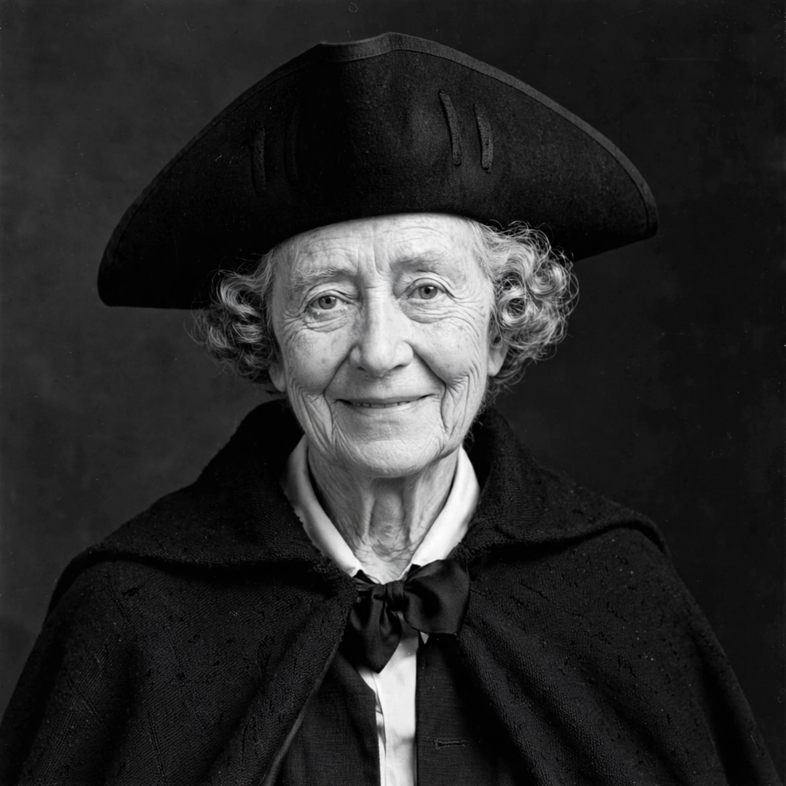

Marianne Moore
| Marianne Moore | |
|---|---|
 | |
| Born | Marianne Craig Moore November 15, 1887 Kirkwood, Missouri, U.S. |
| Died | February 5, 1972 (aged 84) New York City, U.S. |
| Occupation | Poet, editor, critic |
| Alma mater | Bryn Mawr College |
| Movement | Modernism, Imagism |
| Notable awards | Pulitzer Prize for Poetry (1952); National Book Award (1952) |
Marianne Craig Moore (November 15, 1887 – February 5, 1972) was an American modernist poet, critic, translator, and editor. Her poetry is noted for its formal innovation, precise diction, and ironic, erudite wit. She was a leading figure of the modernist movement alongside T. S. Eliot, Ezra Pound, William Carlos Williams, and Wallace Stevens, all of whom championed her work.
Life
Moore was born in Kirkwood, Missouri, and raised largely in Carlisle, Pennsylvania. She attended Bryn Mawr College, graduating in 1909 with studies in history, economics, and biology — the last of which left a lasting mark on her poetry's close observation of animals and natural forms. After teaching at the Carlisle Indian Industrial School, she moved with her mother to New York City in 1918, where she worked at the New York Public Library and became a central figure in modernist literary circles.
Career
From 1925 to 1929 Moore served as editor of The Dial, the influential modernist literary journal, a tenure that made her one of the most powerful arbiters of American letters. Her first book, Poems (1921), was published in London without her knowledge by the poet H.D. and Bryher. Observations followed in 1924. Her Collected Poems (1951) won both the Pulitzer Prize for Poetry and the National Book Award in 1952.
Moore's poems — among them "Poetry", "The Fish", "The Pangolin", "The Paper Nautilus", and "An Octopus" — often employ syllabic verse, in which stanzas are built from lines containing a fixed number of syllables rather than regular stress patterns. She famously opened "Poetry" with the line "I, too, dislike it", while celebrating "imaginary gardens with real toads in them" as the essence of genuine poetry.
Later years and fame
In her eighties Moore became an improbable celebrity: an ardent Brooklyn Dodgers and later New York Yankees fan, she threw out the first pitch at Yankee Stadium in 1968 and was famously consulted by Ford Motor Company for names for a new car — her suggestions ("Utopian Turtletop" among them) were passed over in favour of "Edsel". Her tricorn hat and black cape made her one of the most recognisable poets in America. She died in New York City in 1972.
Selected works
- Poems (1921)
- Observations (1924)
- Selected Poems (1935)
- The Pangolin and Other Verse (1936)
- What Are Years? (1941)
- Nevertheless (1944)
- Collected Poems (1951)
- Like a Bulwark (1956)
- O to Be a Dragon (1959)
- The Complete Poems of Marianne Moore (1967)
See also
References
Leavell, Linda (2013). Holding On Upside Down: The Life and Work of Marianne Moore. Farrar, Straus and Giroux.
Stapleton, Laurence (1978). Marianne Moore: The Poet's Advance. Princeton University Press.